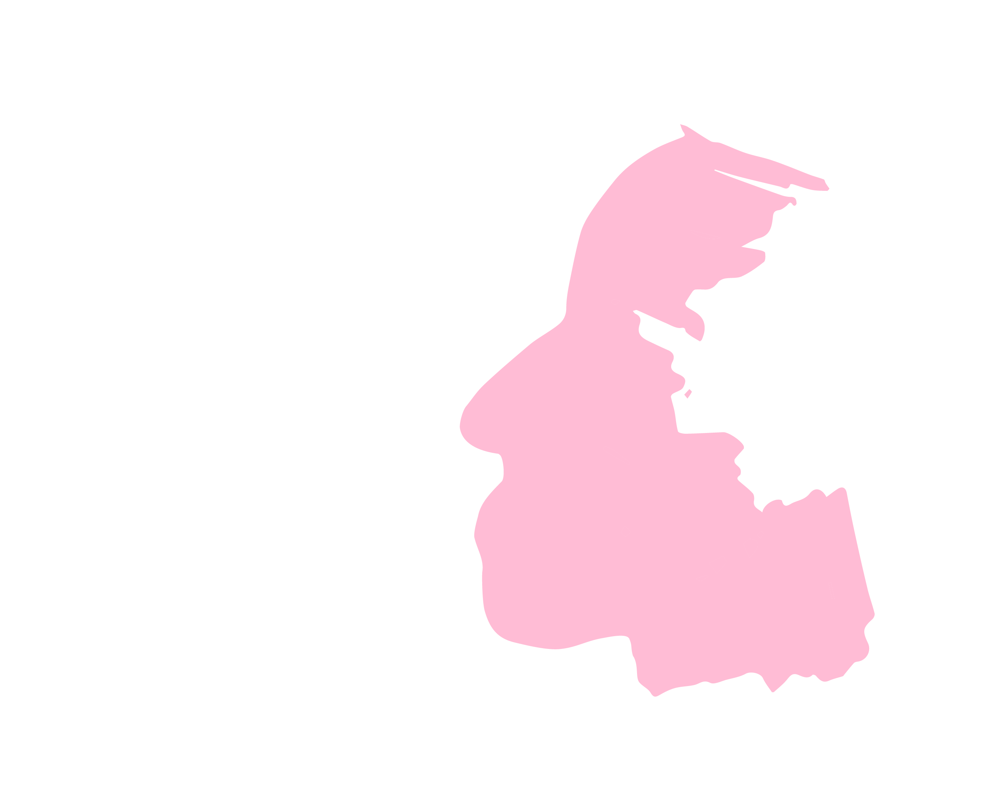
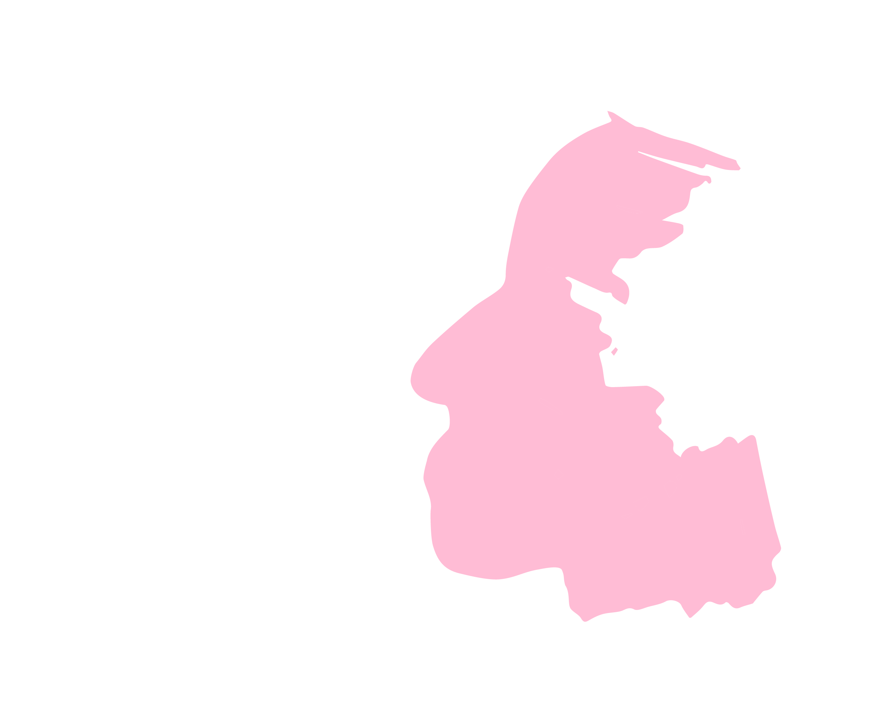

We always underestimated our own participation in magic.
That is, we thought of magic as something that existed with or without us.
But that’s not true.
Things are not magical because they’ve been conjured for us by some outside force.
They are magical because we create them, and then deem them so.
Ryan and Avery will say the first moment they spoke, the first moment they danced,
was magical.
But they were the ones no one else, nothing else who gave it the magic.
We know.
We were there.
Ryan opened himself to it.
Avery opened himself to it.
And the act of opening was all they needed.
That is the magic.